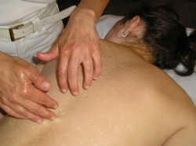

Die Entgiftungsmassage mit Honig
Wie die Honigmassage wirkt:
Bei der Honigmassage wirkt die Kraft des Bienenhonigs direkt über die Haut heilend und sogleich stark entgiftend auf den Organismus.
Durch die pumpenden Bewegungen der Hände werden bei der Honigmassage alle Schlackenstoffe und Gifte tief aus dem Körpergewebe heraus gezogen.
Die Honigmassage belebt den gesamten Organismus stark, sie eignet sich daher in erster Linie bei Erschöpfung und Schwäche infolge von Streß, Alter oder Erkrankungen, bei Spannungen, nervösen Störungen und Unruhezustände.
Durch ihre entgiftende Wirkung, befreit die Honigmassage den gesamten Organismus von Schlackenstoffen, die er im Laufe der Jahre aus der Umwelt, der Nahrung und aus Medikamenten als Schadstoffe eingelagert hat.
Die Honigmassage stellt die natürliche Entgiftungsfähigkeit des Körpers wieder her. Sie eignet sich daher besonders bei der großen Vielzahl typischer Zivilisationserkrankungen, die auf Einlagerung von Giften und Schadstoffen zurückzuführen sind. Hierher gehören zum Beispiel : Herz Kreislauf Probleme, Herz, Allergien, Rheumatische Erkrankungen der Muskeln und Gelenke, Magen und Darmstörungen, Pilzerkrankungen an Darm, Haut oder Organen, chronischer Schnupfen, Nebenhöhlenerkrankungen, chronische Müdigkeitserscheinungen Kopfschmerzen, Nervenstörungen, Einschlaf- Durchschlaf Probleme, Ausfluß und Regel Störungen bei Frauen, Depressionen.
Bei welchen Krankheiten bewährt sich die Honigmassage besonders? Alle Krankheiten auf zu zählen bei denen die Honigmassage hilfreich wirkt ist kaum möglich. Die Honigmassage ist bei uns im Westen kaum bekannt und noch längst nicht bei allen Krankheiten erprobt. Haben sie ruhig den Mut die Honigmassage bei anderem hier nicht genannten Krankheiten zu erproben.
Hilfreich ist die Honigmassage, laut Selbsthilfegruppen Erfahrungen vor allem bei :
- Herz Kreislauf Problemen
- Allergie, wenn es sich nicht gerade um eine Honig Allergie handelt.
- Allen rheumatischen Erkrankungen der Muskel und Gelenke
- Arthrose
- Magen und Darmstörungen
- Pilz- Erkrankungen an der Haut oder Organen

- Chronischem Schnupfen und Nebenhöhlenerkrankungen
- Chronischer Müdigkeit
- Kopfschmerzen
- Nervenstörungen aller Art
- Einschlafen und Schlafprobleme
- Ausfluß und Regelstörungen der Frauen
- Depressionen
- Aller Alters bedingten oder anderen nicht recht erklärbaren schwäche Zustände
- Verzögerte Erholung im Anschluß an schwere Krankheiten
- Nachlassende Vitalität und Leistungsfähigkeit
- Leberleiden aller Art
- Funktion Störungen der Bauchspeicheldrüse
- Nierenschwäche
- Potenzstörungen und Unfruchtbarkeit
- Allen möglichen Krankheitserscheinungen, die durch Umwelt Gifte oder durch Amalgam entstanden sind, nach Operationen.
Wann Sie die Honigmassage nicht anwenden sollten: - Bei Bestehen einer Honig Allergie.
- Im Bereich offener Wunden.
- Bei Haut Schäden, Ekzemen oder Hautaufschlägen ist Vorsicht geboten.
- Bei Blutungen im Körper, z. B. bei Magengeschwüren, Magen bluten.
- Bei frischen Schlaganfall (Apoplex) (einige Zeit später kann eine vorsichtige Honigmassage durchaus hilfreich sein)
- Bei zu hohem Augendruck (Glaukom).
- Bei Thrombose.
- Bei Infektionskrankheiten.
-Marcumar-Patienten (Blutungen)
Der Rücken ist der Ort an dem sich Gefühle und Konflikte austoben.
Obwohl die Belastung durch schwere körperliche Arbeit in unserer Gesellschaft immer weiter zurückgeht, leiden immer mehr Menschen unter Rücken Probleme, Verschleiß scheint also nicht die eigentliche Ursache solcher Probleme zu sein. Blockierte Gefühle und Empfindungen verstecken sich oft hinter den körperlichen Rückenbeschwerden.
Der Rücken gilt als Tummelplatz seelischer Konflikte. Hier haben sie die Gelegenheit sich auszutoben und darzustellen. Auch hier lassen sich die Schmerzen und Probleme verhältnismäßig gut bei ihren Wurzeln packen. Wo es gelingt, durch ganzheitliche Arbeit die blockierten Gefühle zu lösen, so kann auch die lebende Energie wieder ungehindert fließen.
Der Kreislauf der bleibenden Schmerzen ist durchbrochen. Der Psychoanalytiker Wilhelm Reich erkannte als erster der Zusammenhang zwischen seelischen Konflikten und Muskelspannungen des Körpers. Moderne Therapien sind fähig Muskel Spannungen im Rücken aufzulösen und damit die in ihnen verborgenen seelischen Konflikte.
Auch während der Behandlung mit Honigmassage kann es geschehen, daß die Behandelten plötzlich unerwartet emotional reagieren. Meist bevor der Honig, die durch die Haut nach außen gezogene Gifte, aufnehmen kann. Der körperliche Schmerz wird als unerträglich empfunden. Manchmal bricht alte Wut, der in ihnen verborgenen Schmerz, aus ihnen heraus und nicht selten fällt den Betroffenen sogar die Szene aus ihrem Leben dazu ein, in der dieser Schmerz entstand. Oft handelt es sich dabei um Situationen tiefer Demütigung, Verletzung oder Mißachtung, auf die, die Verletzte, damals nicht angemessen reagieren konnte. Denn, wer kann sich denn beispielsweise schon leisten, seinem Chef mal kräftig die Meinung zu sagen! Ihr Körper aber erinnerte sich hier, indem er seine Muskeln verspannte, wenn unvorhergesehen diese emotionalen Reaktionen durch eine Honigmassage auftreten. Die aufgestockten Spannungen beginnen sich zu lösen, was als ein positives Zeichen zu sehen ist.
Das kann der Beginn eines tief greifenden Heilungsprozesses sein.
In diesem Sinne viel Spaß, Innere Führung und Ausdauer...